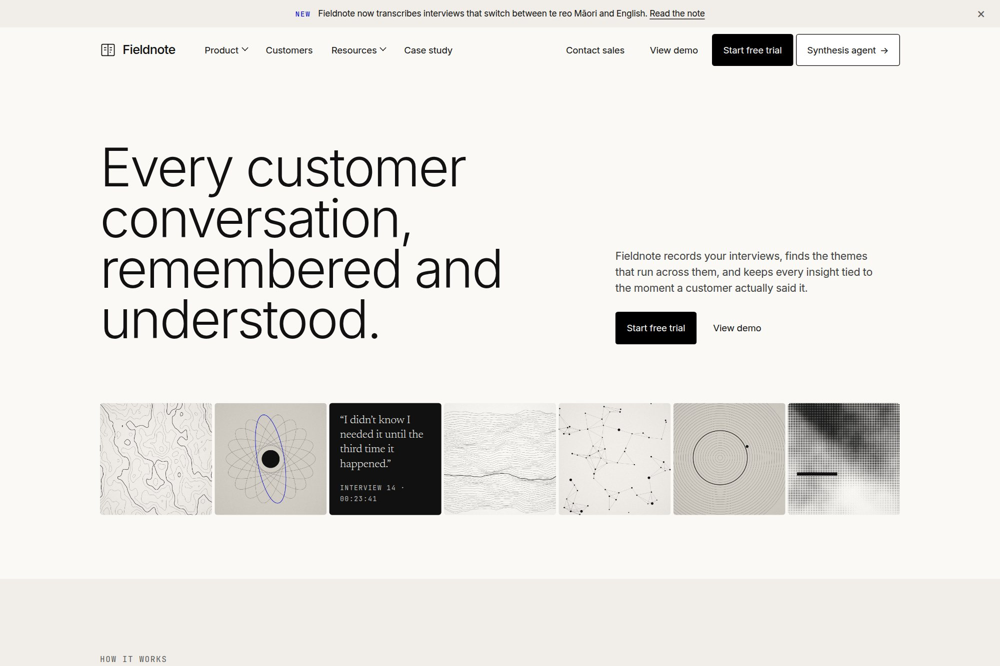

14 — Research platform
Quiet type, loud evidence.
A customer-research workspace in a warm editorial system, where every insight stays tied to the moment a customer said it.

- Type
- Concept · self-directed
- Discipline
- Web · UI · Product
- Deliverables
- Marketing site, four product surfaces, label system
- System
- 4px radius, weight 300, one accent
01The brief
Research tools tend to look like analytics dashboards: dense, blue and loud. Fieldnote's users spend their day reading what customers said, and the brief asked for a product and site that feel closer to a well-edited magazine than a control panel.
The harder half of the brief was trust. A synthesis is only useful if the team believes it, so the design had to make evidence — quotes, timestamps, counts — as visible as the conclusions drawn from it.
02Design decisions
- Display type at weight 300 and 80px, with a monospace label system at wide tracking doing the work that bold weights and colour usually do.
- One violet, used once or twice a screen, marks evidence: highlighted quotes, counts and the agent's drafts. Buttons stay black, so the accent never becomes an action colour.
- No shadows, no gradients and no rules between sections. Depth comes from three warm surface tones, so product screenshots sit in the page like plates in a book.
03Outcome
A marketing site and four product surfaces — record, transcribe, synthesise and share — in one warm editorial system, with every theme showing its evidence count and every quote its timestamp.
A concept project designed in-house by Yonder Tech, not a client engagement. Figures describe the delivered design system, not commercial results.